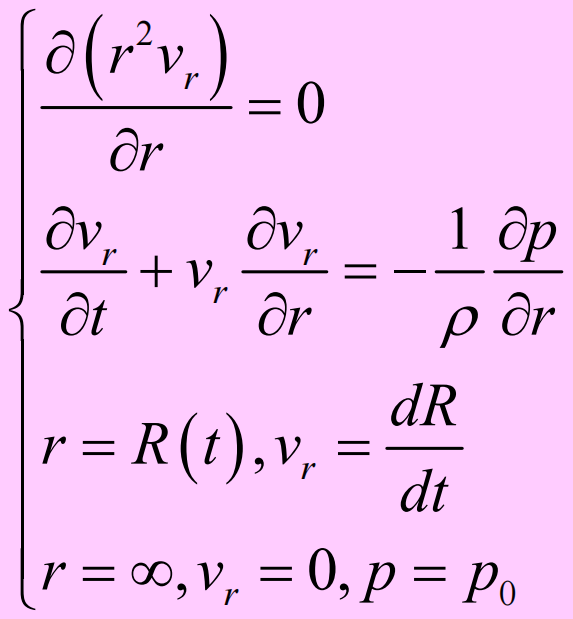
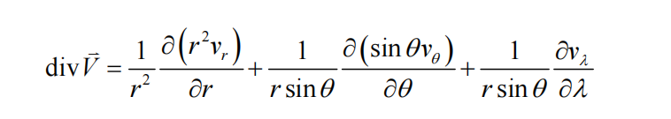

第 1 页
2
理想流体流动
流体力学暑期课ppt/2 理想流体流动(1).pptx 已解包为 HTML 幻灯片文本和内嵌图片内容。
本页是 181103 原始资料的 HTML 内容版，只发布 HTML、图片和样式产物；不提供 PDF、PPT、DOC、ZIP 原件下载链接。
2
理想流体流动
预 备
理想流体流动模型
适用条件：低粘（大
Re
数）
e.g.
无流动分离的边界层以外的流动
系统（
system
）和控制体（
control volume
）：
1.
系统
——
物质体（
a definite fixed mass of material
），即流体（微）团
拉格朗日方法研究
系统动量和能量的变化
2.
控制体
——
流动空间中的某个（微元）子空间（
a fixed volume
）
控制面（
control surface
）
欧拉方法研究流体流经控制体时
控制体内
质量、动量和能量
的变化
2.1
质量连续方程
一、积分形式方程

二、微分形式方程

讨论：

2.2
理想流体动量方程
一、应力张量
P=-
pI
二、
Euler
方程


三、理想流体不可压缩流动定解问题

例
1
一完全浸没在不可压缩流体内部的球按规律
R
R
(
t
)
膨胀，不计体力，求球面上的压强。设无穷远处流体速度为零，压强为
。


